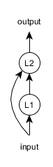
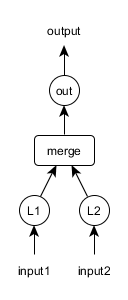
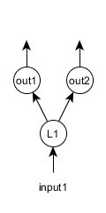

本页主要介绍如何用DL4J的计算图（Computation Graph）功能来构建更加复杂的网络。
新功能：截至7.3，在执行三元组损失（triplet loss）时，计算图将支持无参数LossLayer和顶点
目录
DL4J有两种多层神经网络：
具体而言，ComputationGraph可以构建具备以下功能的网络：
总体上的原则是：如果要建立只有单一输入层、单一输出层，连接结构形如“输入->a->b->c->输出”的网络，那么MultiLayerNetwork通常是更理想的选择。但是，ComputationGraph也可以实现MultiLayerNetwork的所有功能，尽管配置方式可能会更复杂一些。
可以用ComputationGraph建立的架构类型包括：
ComputationGraph的核心组成部分是GraphVertex（图的顶点，亦简称为“点”），而非层。层（更准确地说是LayerVertex对象）只不过是计算图中的一类顶点。其他类型的顶点包括：
以下是上述各类顶点的简要介绍:
.addLayer(String,Layer,String...)方法来添加。第一个参数是层的标签，而最后一个参数则是该层的输入。 如果您需要手动添加一项InputPreProcessor（输入预处理器，通常不需要这样操作——参见下一段），可以使用.addLayer(String,Layer,InputPreProcessor,String...)方法。addInputs(String...)方法指定。作为输入的字符串可任意指定——它们是由用户定义的标签，之后可以在配置中引用。字符串的数量决定了输入的数量；输入的顺序也决定了 fit 方法中相应的 INDArrays（或DataSet/MultiDataSet对象））的顺序。.addVertex("subset1", new SubsetVertex(0,4), "layer1")：如此一来，子集点将会输出“layer1”顶点中的第0至第4个（闭区间）激活值。最后，您还可以用自定义的GraphVertex配置和实现类来自行定义顶点。
假设我们想要建立以下的循环神经网络架构
在本示例中，我们假定输入数据的大小为5。具体配置方法如下：
ComputationGraphConfiguration conf = new NeuralNetConfiguration.Builder()
.learningRate(0.01)
.graphBuilder()
.addInputs("input") //这里可以使用任何标签
.addLayer("L1", new GravesLSTM.Builder().nIn(5).nOut(5).build(), "input")
.addLayer("L2",new RnnOutputLayer.Builder().nIn(5+5).nOut(5).build(), "input", "L1")
.setOutputs("L2") //我们需要指定网络的输出及其顺序
.build();
ComputationGraph net = new ComputationGraph(conf);
net.init();
注意在.addLayer(…)方法中，第一个字符串（”L1”、”L2”）是层的名称，最后的字符串（[“input”]、[“input”,”L1”]）是层的输入。
想象如下架构：
其中的合并点将L1和L2层输出的激活值合并（或称连接，concatenate）起来：所以，如果L1和L2层都有4个激活值输出（.nOut(4)），那么合并点的输出大小为4+4=8个激活值。
上述网络架构的配置如下：
ComputationGraphConfiguration conf = new NeuralNetConfiguration.Builder()
.learningRate(0.01)
.graphBuilder()
.addInputs("input1", "input2")
.addLayer("L1", new DenseLayer.Builder().nIn(3).nOut(4).build(), "input1")
.addLayer("L2", new DenseLayer.Builder().nIn(3).nOut(4).build(), "input2")
.addVertex("merge", new MergeVertex(), "L1", "L2")
.addLayer("out", new OutputLayer.Builder().nIn(4+4).nOut(3).build(), "merge")
.setOutputs("out")
.build();
多任务学习指让神经网络进行多项彼此独立的预测。 比如，想象一个同时用于分类和回归的简单网络。假设有两个输出层，“out1”用于分类，“out2”用于回归。
此时的网络配置如下：
ComputationGraphConfiguration conf = new NeuralNetConfiguration.Builder()
.learningRate(0.01)
.graphBuilder()
.addInputs("input")
.addLayer("L1", new DenseLayer.Builder().nIn(3).nOut(4).build(), "input")
.addLayer("out1", new OutputLayer.Builder()
.lossFunction(LossFunctions.LossFunction.NEGATIVELOGLIKELIHOOD)
.nIn(4).nOut(3).build(), "L1")
.addLayer("out2", new OutputLayer.Builder()
.lossFunction(LossFunctions.LossFunction.MSE)
.nIn(4).nOut(2).build(), "L1")
.setOutputs("out1","out2")
.build();
ComputationGraphConfiguration的功能之一是可以在配置中用.setInputTypes(InputType...)方法来指定网络的输入类型。
setInputType方法有两个效果：
setInputTypes(InputType...)功能时不必在配置中手动指定.nIn(x)选项。这有助于简化某些架构的构建（比如包含完全连接层的卷积网络）。如果一个层的.nIn(x)已指定，网络使用InputType功能时不会替代已指定的值。举例而言，假设网络有两项输入，其中之一是卷积输入，另一个是前馈输入，那么您可以采用.setInputTypes(InputType.convolutional(depth,width,height), InputType.feedForward(feedForwardInputSize))
ComputationGraph可以使用两种类型的数据。
DataSet类最初的设计目的是用于MultiLayerNetwork，但它也能用于ComputationGraph，不过仅适用于只有单一输入和输出数组的计算图。有多个输入或输出数组的计算图架构无法使用DataSet和DataSetIterator（应换用MultiDataSet/MultiDataSetIterator）。
DataSet对象实际上就是一对含有训练数据的INDArray数组。在RNN网络中，它也有可能包括掩膜数组（更多详情参见此页）。DataSetIterator就是DataSet对象的迭代器。
MultiDataSet是DataSet的多项输入和/或多项输出版本。在循环神经网络中，它也有可能包括多个掩膜数组（与每个输入/输出数组对应）。一般而言，您应当使用DataSet/DataSetIterator，除非需要处理多项输入和/或多项输出。
目前有两种使用MultiDataSetIterator的方法：
RecordReaderMultiDataSetIterator提供多种数据加载方式。RecordReaderMultiDataSetIterator的具体功能如下：
以下是一些如何使用RecordReaderMultiDataSetIterator的基础示例。您也可以参考这些单元测试。
假设我们有一个包含5个列的CSV文件，要把前3列作为输入，后2列作为输出（用于回归）。可以按如下方法构建MultiDataSetIterator：
int numLinesToSkip = 0;
String fileDelimiter = ",";
RecordReader rr = new CSVRecordReader(numLinesToSkip,fileDelimiter);
String csvPath = "/path/to/my/file.csv";
rr.initialize(new FileSplit(new File(csvPath)));
int batchSize = 4;
MultiDataSetIterator iterator = new RecordReaderMultiDataSetIterator.Builder(batchSize)
.addReader("myReader",rr)
.addInput("myReader",0,2) //输入：第0至2列，闭区间
.addOutput("myReader",3,4) //输出：第3至4列，闭区间
.build();
假设我们有两个独立的CSV文件，一个作为输入，一个作为输出。再进一步假设我们需要建立一个多任务学习架构，其中有两项输入，一项为分类。 在这个示例中，我们假设数据情况如下：
本例中的迭代器可以按如下方法构建：
int numLinesToSkip = 0;
String fileDelimiter = ",";
RecordReader featuresReader = new CSVRecordReader(numLinesToSkip,fileDelimiter);
String featuresCsvPath = "/path/to/my/myInput.csv";
featuresReader.initialize(new FileSplit(new File(featuresCsvPath)));
RecordReader labelsReader = new CSVRecordReader(numLinesToSkip,fileDelimiter);
String labelsCsvPath = "/path/to/my/myOutput.csv";
labelsReader.initialize(new FileSplit(new File(labelsCsvPath)));
int batchSize = 4;
int numClasses = 3;
MultiDataSetIterator iterator = new RecordReaderMultiDataSetIterator.Builder(batchSize)
.addReader("csvInput", featuresReader)
.addReader("csvLabels", labelsReader)
.addInput("csvInput") //输入：来自输入读取器的所有列
.addOutput("csvLabels", 0, 3) //输出1：第0至3列，闭区间
.addOutputOneHot("csvLabels", 4, numClasses) //输出2：第4列 -> 转换为one-hot形式，用于分类
.build();